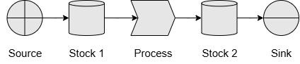

The QuokkaSim Book
Welcome to the QuokkaSim Book – your guide to learning and mastering QuokkaSim, the Rust-based discrete-event simulation framework.
As of the 28th June 2025, QuokkaSim is at version
0.2.2and is under very active development. JJ is currently looking for feedback on:
- Your experiencing learning QuokkaSim. Is anything more difficult than it should be? I'd love to hear about it!
- Mapping your use cases to QuokkaSim. Unsure how your particular use case can be modelled with QuokkaSim? I'd love to hear about it and discuss it with you!
- Anything in general, really. QuokkaSim is still in early days - so any and all feedback is appreciated!
What is QuokkaSim?
QuokkaSim is a high-performance, event-driven simulation framework written in Rust, on top of the NeXosim simulation engine.
QuokkaSim is also:
- Open source
- Permissively licensed (via the MIT License)
- Memory-safe
- Highly performant, via the NeXosim crate
- Accessible to new simulation modellers and new Rust developers
Who should read this book?
This book is written primarily for new and experienced simulation modellers, who are new to the Rust programming language and NeXosim simulation engine. The aim of this book (and QuokkaSim more generally) is to provide a structured way to learn QuokkaSim with as minimal friction as possible with the Rust compiler.
For new simulation modellers:
- Chapter 1: Getting Started is a Quick Start Guide to running and modifying your first QuokkaSim model.
- Chapter 2: A Conceptual Overview explores the specific concepts used by QuokkaSim, with the aim of new users being able to map real-world scenarios into QuokkaSim concepts, even before touching the code.
- Chapter 3: Building Your Simulation Model dives into the code, guiding you through how to navigate parsing through an example simulation, and building your own.
- Chapter 4: Examples summarises a number of example QuokkaSim models, which can be referenced for how to implement different types of custom logic and features.
FAQ
Why does QuokkaSim use Rust?
-
Incredible performance without the need to write plain C code
-
Building with Rust means we can make QuokkaSim free, open source and permissively licensed, to democratise simulation software - making world-class simulation modelling accessible beyond those with licenses to proprietary software.
-
Rust's strict compiler ensures all possible cases are explicitly handled and enforces the principle of making impossible states unrepresentable. This aligns perfectly with simulation modeling, where defining clear rules and handling unforeseen edge cases is crucial for reliable extrapolation beyond empirical data and known behaviours.
-
Rust is the world's most admired programming language, and has maintained this status for the last 8 years
Why choose QuokkaSim over SimPy?
Two main points:
- Performance - plain and simple. Faster performance and a smaller memory footprint means not only faster model development and scenario runs, but also unlocks many more opportunities for use e.g. integrations into ML models, embedment in web applications etc.
- Maintainability especially for larger simulation models. Different from SimPy, QuokkaSim provides a comprehensive framework of components that can be used as-is, or extended by defining custom components, and also benefits from the strictness of Rust's compiler and borrow checker, to provide modellers less time debugging 'plumbing' issues, and more time on business logic and features.
Yes, this FAQ is bare. Please let JJ know if you have any questions - I'd like to add more to this section!
Chapter 1: Getting Started
Welcome to your first QuokkaSim simulation! In this chapter you will
- Install Rust
- Create a new Rust project
- Add QuokkaSim as a dependency
- Write and run a minimal "hello world" simulation
1.1. Install Rust
Follow the instructs on the Rust Lang website to install Rust on your operating system. These instructions will help you install:
rustup, the Rust installer, andcargo, the Rust package manager
To check if installation is successful, use cargo -V to check which version of Cargo you have installed.
1.2. Create a new Rust project
If you don’t already have a project, open a terminal and run:
cargo new hello‐quokkasim
cd hello‐quokkasim
This creates a fresh binary crate with src/main.rs.
1.3. Add QuokkaSim to Cargo.toml
To add QuokkaSim as a dependency, use cargo add quokkasim or add the following to your Cargo.toml file before running cargo fetch:
[dependencies]
quokkasim = "0.1.0"
1.4. Write your first Simulation
In your main.rs file, paste in the following code at the top. This imports the required objects, and also creates our ComponentModel and ComponentLogger enums, which we will learn about later.
#![allow(unused)] fn main() { use std::{error::Error, fs::create_dir_all, time::Duration}; use quokkasim::{define_model_enums, prelude::*}; define_model_enums! { pub enum ComponentModel {} pub enum ComponentModelAddress {} pub enum ComponentLogger {} pub enum ScheduledEventConfig {} } impl CustomComponentConnection for ComponentModel { fn connect_components(a: &mut Self, b: &mut Self, n: Option<usize>) -> Result<(), Box<dyn Error>> { match (a, b) { (a, b) => Err(format!("No component connection defined from {} to {} (n={:?})", a, b, n).into()), } } } impl CustomLoggerConnection for ComponentLogger { type ComponentType = ComponentModel; fn connect_logger(a: &mut Self, b: &mut Self::ComponentType, n: Option<usize>) -> Result<(), Box<dyn Error>> { match (a, b, n) { (a, b, _) => Err(format!("No logger connection defined from {} to {} (n={:?})", a, b, n).into()), } } } }
Next we create the individual interactive components of our simulation

Stock 1 hold some quantity of material, which Process moves at specific times, into Stock 2. Add the following into the main() function to create these components, and to connect them together.
#![allow(unused)] fn main() { let mut source = ComponentModel::Vector3Source( VectorSource::new() .with_name("Source") .with_process_quantity_distr(Distribution::Constant(1.)) .with_process_time_distr(Distribution::Constant(1.)) .with_source_vector([1., 4., 5.].into()), Mailbox::new() ); let mut stock_1 = ComponentModel::Vector3Stock( VectorStock::new() .with_name("Stock 1") .with_low_capacity(50.) .with_max_capacity(101.) .with_initial_resource([0., 0., 0.].into()), Mailbox::new() ); let mut process = ComponentModel::Vector3Process( VectorProcess::new() .with_name("Process") .with_process_quantity_distr(Distribution::Constant(1.)) .with_process_time_distr(Distribution::Constant(1.)), Mailbox::new() ); let mut stock_2 = ComponentModel::Vector3Stock( VectorStock::new() .with_name("Stock 2") .with_low_capacity(50.) .with_max_capacity(101.) .with_initial_resource([0., 0., 0.].into()), Mailbox::new() ); let mut sink = ComponentModel::Vector3Sink( VectorSink::new() .with_name("Sink") .with_process_quantity_distr(Distribution::Constant(1.)) .with_process_time_distr(Distribution::Constant(2.)), Mailbox::new() ); let mut process_logger = ComponentLogger::Vector3ProcessLogger(VectorProcessLogger::new("ProcessLogger")); let mut stock_logger = ComponentLogger::Vector3StockLogger(VectorStockLogger::new("StockLogger")); connect_components!(&mut source, &mut stock_1).unwrap(); connect_components!(&mut stock_1, &mut process).unwrap(); connect_components!(&mut process, &mut stock_2).unwrap(); connect_components!(&mut stock_2, &mut sink).unwrap(); }
Next we'll add some Logger instances to report on what occurs during the simulation, and connect them to our Process and Stock components.
#![allow(unused)] fn main() { // Connect loggers connect_logger!(&mut process_logger, &mut source).unwrap(); connect_logger!(&mut process_logger, &mut process).unwrap(); connect_logger!(&mut process_logger, &mut sink).unwrap(); connect_logger!(&mut stock_logger, &mut stock_1).unwrap(); connect_logger!(&mut stock_logger, &mut stock_2).unwrap(); }
Then we create our Simulation object sim, which controls the progression of the simulation.
#![allow(unused)] fn main() { let mut sim_builder = SimInit::new(); sim_builder = register_component!(sim_builder, stock_1); sim_builder = register_component!(sim_builder, stock_2); sim_builder = register_component!(sim_builder, source); sim_builder = register_component!(sim_builder, process); sim_builder = register_component!(sim_builder, sink); let start_time = MonotonicTime::try_from_date_time(2025, 1, 1, 0, 0, 0, 0).unwrap(); let (mut simu, scheduler) = sim_builder.init(start_time).unwrap(); }
We send and initialisation events, tell our simulation to run for an hour, and write the resulting logs to CSV files.
#![allow(unused)] fn main() { simu.step_until(start_time + Duration::from_secs(120)).unwrap(); let output_dir = "outputs/source_sink"; create_dir_all(output_dir).unwrap(); stock_logger.write_csv(output_dir).unwrap(); process_logger.write_csv(output_dir).unwrap(); }
Our main.rs file is now complete (or refer to the Full Code below if you think you're missing something).
Use cargo run to run the simulation, and we have our logs in the outputs/source_sink directory!
1.5. Exercises
Want to start playing around immediately? Here are some ideas of things you can try before moving on with the rest of the book!
- 5 minutes is simulated to begin with. What if we simulate for longer?
- The initial simulation begins with signicant stock in
Stock 1. What happens if it starts empty? - What if instead of a sink removing material from the system, we make
Stock 2bigger and see how long it takes to fill up? - What if we add an additional sink that takes directly from
Stock 1, or an addition source that feeds directly intoStock 2? - What if there were no source or sink, but instead an additional process from
Stock 2intoStock 1? - What if we want to have logs for
SourceandSinksave into their own log files?
Full Code
use std::{error::Error, fs::create_dir_all, time::Duration}; use quokkasim::{define_model_enums, prelude::*}; define_model_enums! { pub enum ComponentModel {} pub enum ComponentModelAddress {} pub enum ComponentLogger {} pub enum ScheduledEventConfig {} } impl CustomComponentConnection for ComponentModel { fn connect_components(a: &mut Self, b: &mut Self, n: Option<usize>) -> Result<(), Box<dyn Error>> { match (a, b) { (a, b) => Err(format!("No component connection defined from {} to {} (n={:?})", a, b, n).into()), } } } impl CustomLoggerConnection for ComponentLogger { type ComponentType = ComponentModel; fn connect_logger(a: &mut Self, b: &mut Self::ComponentType, n: Option<usize>) -> Result<(), Box<dyn Error>> { match (a, b, n) { (a, b, _) => Err(format!("No logger connection defined from {} to {} (n={:?})", a, b, n).into()), } } } fn main() { /* * Create components */ let mut source = ComponentModel::Vector3Source( VectorSource::new() .with_name("Source") .with_process_quantity_distr(Distribution::Constant(1.)) .with_process_time_distr(Distribution::Constant(1.)) .with_source_vector([1., 4., 5.].into()), Mailbox::new() ); let mut stock_1 = ComponentModel::Vector3Stock( VectorStock::new() .with_name("Stock 1") .with_low_capacity(50.) .with_max_capacity(101.) .with_initial_resource([0., 0., 0.].into()), Mailbox::new() ); let mut process = ComponentModel::Vector3Process( VectorProcess::new() .with_name("Process") .with_process_quantity_distr(Distribution::Constant(1.)) .with_process_time_distr(Distribution::Constant(1.)), Mailbox::new() ); let mut stock_2 = ComponentModel::Vector3Stock( VectorStock::new() .with_name("Stock 2") .with_low_capacity(50.) .with_max_capacity(101.) .with_initial_resource([0., 0., 0.].into()), Mailbox::new() ); let mut sink = ComponentModel::Vector3Sink( VectorSink::new() .with_name("Sink") .with_process_quantity_distr(Distribution::Constant(1.)) .with_process_time_distr(Distribution::Constant(2.)), Mailbox::new() ); let mut process_logger = ComponentLogger::Vector3ProcessLogger(VectorProcessLogger::new("ProcessLogger")); let mut stock_logger = ComponentLogger::Vector3StockLogger(VectorStockLogger::new("StockLogger")); connect_components!(&mut source, &mut stock_1).unwrap(); connect_components!(&mut stock_1, &mut process).unwrap(); connect_components!(&mut process, &mut stock_2).unwrap(); connect_components!(&mut stock_2, &mut sink).unwrap(); /* * Create loggers */ // Connect loggers connect_logger!(&mut process_logger, &mut source).unwrap(); connect_logger!(&mut process_logger, &mut process).unwrap(); connect_logger!(&mut process_logger, &mut sink).unwrap(); connect_logger!(&mut stock_logger, &mut stock_1).unwrap(); connect_logger!(&mut stock_logger, &mut stock_2).unwrap(); /* * Build simulation */ let mut sim_builder = SimInit::new(); sim_builder = register_component!(sim_builder, stock_1); sim_builder = register_component!(sim_builder, stock_2); sim_builder = register_component!(sim_builder, source); sim_builder = register_component!(sim_builder, process); sim_builder = register_component!(sim_builder, sink); let start_time = MonotonicTime::try_from_date_time(2025, 1, 1, 0, 0, 0, 0).unwrap(); let (mut simu, scheduler) = sim_builder.init(start_time).unwrap(); /* * Run simulation */ simu.step_until(start_time + Duration::from_secs(120)).unwrap(); let output_dir = "outputs/source_sink"; create_dir_all(output_dir).unwrap(); stock_logger.write_csv(output_dir).unwrap(); process_logger.write_csv(output_dir).unwrap(); }
Chapter 2: A Conceptual Overview
In this chapter, we cover the main concepts defined and used in QuokkaSim, and how to map your real-world scenario into these concepts, which we will later cover how to implement as a model in Chapter 3.
This chapter increases in theoretical depth as it progresses. If you are new to simulations, up to Chapter 2.3. is recommended.
Chapter 2.4. is recommended if you are needing to build more customised components and structures than what QuokkaSim provides out-of-the-box.
After reading this chapter you should:
- Understand QuokkaSim as a Discrete Event Simulation framework, and the contexts in which such a DES framework is applicable
- Understand the core concepts of Resources, Stocks and Processes, and examples of how real-world scenarios can be mapped to these concepts
- Have a basic understanding of the interactions between Processes and Stocks, via the exchange of Resources, and how these events for a process are triggered internally and externally
- Be familiar with the concepts of Resource conservation, and how this relates to Sources, Sink and other types of Process
- Be familiar with the classification of Splitters and Combiners as AND-like, OR-like or a combination of both.
2.1. Discrete Event Simulation and the Schedule
Simulations answer "what-if" questions, most commonly about what is the result of a set of initial conditions, rules, and controls.
One approach is to approximate the continuous flow of time, by simulating the system at regular time-steps. This is a good regime for modelling continuous processes, such as:
- Movement of a pendulum under gravity,
- Temperature of a room over a day, or
- Stresses and fatigue in a beam under repeated loads
A time-stepped approach is good in these cases because
- There are well-defined equations for how quantities of interest change over time
- The length of the time-step can be adjusted based on how precise results need to be (and in fact, some approaches use an adaptive, changing time-step)
In each of the above situations, quantities of interest change continuously over time, so we need to re-calculate the state of the system often to ensure we're capturing any important changes.
However, many systems don't deal with continuous quantities, or have important behaviour happening continuously over time, for example:
- Traffic flow through a traffic light,
- Preparing drinks at a cafe, or
- Car assembly at a factory
In these situations, it can be very inefficient to update every component of the system at every timestep. A better approach here is to only update the system at the exact timesteps where something will happen! This is the approach taken in Discrete Event Simulation.
In Discrete Event Simulation, an ordered schedule of events is maintained, and time jumps forward to the next event, which in turns can schedule more events.
2.2. Resources, Stocks and Processes
TL;DR:
- Resources are the quantities of stuff that we're interested in the movement of
- Stocks are entities which passively hold resources
- Processes are entities which actively move or transform resources, and can hold some resources as part of processing
| Example Use Case | Resource | Stocks | Processes |
|---|---|---|---|
| Water tanks connected by pipes | Litres of water | Tanks, resevoirs, pipes | Valves |
| Trucking of Ore | Tonnes of ore | Stockpiles of ore | Trucks, conveyors, reclaiming equipment |
| Customers in a Cafe | Customers | Queue for ordering, waiting area | Taking orders, serving drinks |
2.3. Detailed Material Flow: Customers in a Cafe
Time = Initial

We have a stock representing a queue of customers, which is processed by a barista who takes drink orders, before customers go into another queue to wait for their drink. The starting point of the simulation is shown in the diagram, with 3 people in line, and 1 person waiting for their drink.
Remember that Discrete Event Simulations relies on scheduled events triggering more events. There are no events at the start of the simulation, so we kick-start the simulation at the start by telling our Barista taking orders Process to update itself.
Time = 0:00

The barista can only process a customer if a customer is in the queue, and if there is sufficient room in the waiting area (or perhaps just to not overwhelm the baristas who are making the drinks).
First, the process retrieves the current state of the upstream stock (Queued Customers) and downstream stock (Waiting for drinks). For now, stocks can have one of three states: Empty, Normal and Full.
Queued customers is Full and Waiting for drinks is Normal. In this case, the barista can take an order, so the process seizes the front-most customer from the queue, and schedules a new event to occur in 30 seconds, when the ordering is complete.
Time = 0:30

30 seconds later, the event triggers Barista taking orders is prompted to update itself again. This time, it first moves Customer B moves into the Waiting for drinks stock, before checking upstream and downstream states again. This time both states are Normal, in which case the process seizes the next customer and repeats.

Time = 1:00

Barista taking orders is again triggered to update its state, and moves C into Waiting for drinks. This time the upstream and downstream states are Normal and Full. Because downstream is full, we do not process the next customer, and instead wait until we are triggered to update again.
Time = 1:15

Waiting for drinks has reduced from 3 people to 1 person, meaning its state has changed from Full to Normal. This change of state triggers any upstream or downstream processes to update, meaning that Barista taking orders is triggered to update.
Barista taking orders checks both upstream and downstream state again, finds both are Normal, so then begins processing D.
2.4. A Taxonomy of Processes
In QuokkaSim, Processes are at the heart of all dynamic behaviours. We wish to make our processes as flexible as possible to allow us to test whatever we wish. However, we also wish to have as minimal of a set of these processes as possible, to minimise complexity and the mental burden of reasoning about them. With a small set of well-defined components, modellers who are new to QuokkaSim are able to pick up the framework quickly, and effectively translate real-world scenarios to a model representation.
Note that we are not saying you have to follow this taxonomy or these concepts. You are free to create your own components suited to your use cases. If you have a case that isn't well suited to using our components, we'd like to hear about it! If such use cases are common, we will consider adding them as components in QuokkaSim directly.
| Concept | # Inputs | # Outputs | Conserves resources? |
|---|---|---|---|
| Simple Process | 1 | 1 | ✅ Yes |
| Source | 0 | 1 | ❌ Creates resources |
| Sink | 1 | 0 | ❌ Destroys resources |
| Combiner | N | 1 | ✅ Yes |
| Splitter | 1 | N | ✅ Yes |
2.4.1. Resource Conservation
In most systems, there can be a natural sense of conservation, or of balance. For example:
- In a transport simulation, a
Car { car_id: u32, make: String, model: String }resource should not be created or destroyed in most processes. Cars are a conserved quantity in this context. - In a manufacturing simulation where we track the parts of a car through the manufacturing process via a vector of masses
ProtoCar { assembled_kg: f64, loose_tyres_kg: f64, loose_engine_kg: f64 }, the total mass of parts through our system should be conserved, except where new parts are introduced into the system or the assembled car is removed from the system. However, the individual components likeloose_tyres_kgare not conserved, and can be transformed intoassembled_kgsubject to the total mass being conserved. - In an ore crushing operation, where a crusher processes large rocks into smaller pieces, we may use a vector of masses
Ore { small: f64, medium: f64, large: f64 }. The crusher may transform large pieces into small or medium pieces, but the total mass is conserved.
By having most processes conserving resources, the key activities of resource creation and destruction are separated out into their own proceses, which can be monitored with more scrutiny than other processes.
2.4.2. Types of Combiners and Splitters
Combiners and Splitters can be further classified by whether or not inputs/outputs are AND-like (combinations) or XOR-like (choices) - or a combination of both.
What does this mean? Let's think through a couple of examples of combiners first.

Let's say you're a delivery driver. At your disposal is a number of cars, vans and trucks. Each distinct set of vehicle is a stock, but you can only choose to take from one of these stocks at this time. This is an XOR-like combiner process, as you must choose a car or a van or a truck - where or is an exclusive or (XOR).

On the other hand, let's say you are combining the ingredients for a cake - butter, sugar, eggs and flour. In this case, we want a combination of all four in a specific ratio, not an exclusive choice of one of them. In general we want a combination of some quantity of butter and sugar and eggs and flour (though in an edge case some quantities may be 0), thus this is a AND-like combiner process.
An example of a more general combiner which has both XOR and AND elements is the above cake batter example, but where you have to choose exclusively from different types of sugar like White Sugar, Brown Sugar and Honey.
A similar breakdown can be made of Splitters. XOR-like splitters push material into one stock at a time. AND-like splitters generally push material into all downstream stocks at once. A more general splitter can push into multiple, but have some exclusivity constraints.
Chapter 3: Building your Simulation Model
Now that we've understood the core concepts used by QuokkaSim, let's look at how we assemble a simulation model from scratch.
- Definitions
- Model Assembly
- Execution and Logging
This chapter will explain the purpose of the specific structs, enums, traits and macros provided by QuokkaSim. Code snippets are also used, but are only for demonstrating individual concepts. Numerous full examples of working simulations can be found in Chapter 4: Examples.
For a video walkthrough of an example simulation, see QuokkaSim in 18 Minutes | Car Workshop Simulation. Code for this example can be found here
3.1. Initial Setup
A bare-bones QuokkaSim simulation requires a small amount of boilerplate code to define a number of required enums and macros within your simulation file. A minimal version can be found in API Reference - Definitions Boilerplate.
Alternatively, we recommend looking through the list of examples, to find a suitable simulation to use as a starting point.
3.2. Architecting your Simulation
The decision of how to structure your simulation model in terms of QuokkaSim components (and any addditional custom logic) is key.
Resources in QuokkaSim can be categorised as:
-
Vector (or Continuous) quantities.
Examples include
f64to describe a continuous quantity (e.g. mass of material, energy in Joules)Vector3to describe a 3-component continuous quantity (e.g. Iron, Silica and Other mass components in iron ore)
-
Discrete quantities
Examples include
Stringto uniquely identify customer arriving at a cafeF64Containerto represent a truck with a unique identifier, maximum capacity, and the ability to hold af64resourceVector3Containerto represent a delivery van with a maximum capacity and the ability to hold aVector3resource with components describing content types
A simulation can have any number of distinct Vector and Discrete resources. Using separate resources for different aspects of your model can be beneficial in keeping your simulation clear and maintainable, but there is additional overhead with using separate resources.
Depending on your resource/s, you will require different ComponentModel variants. For a full list of pre-defined components see API Reference - ComponentModel, though you are free and able to define custom compoonents in your own projects.
3.3. Coding your Simulation
3.4. Semi-Custom Components
3.5. Fully Custom Components
Chapter 4: Examples
A number of example simulations exist to act as a reference for how to apply the concepts covered in this guide, in practice:
| Example | Concepts |
|
source_sink.rs
Linear chain of a source, process and sink, linked via stocks. This example is covered in Chapter 1. |
Pre-built components Vector Resource (Vector3) Sources Sinks |
|
material_blending.rs
Model of a stockyard with Reclaimers to remove material from multiple stockpiles, and a Stacker to add material to multiple stockpiles. |
Pre-built components Vector Resource (Vector3) Splitters and Combiners |
|
car_workshop.rs
Model of a Car Workshop using Strings to represent cars, and multiple processes sourcing and depositing into common queues. |
Pre-built components Discrete Resource (String) Fixed-N Parallel Processes |
|
discrete_queue.rs
Basic example demonstrating use of a Sequence resource of Strings. Processes and stocks are arranged in infinite loop. |
Pre-built components Sequence Resource (String) Distribution Sampling |
|
iron_ore.rs
Processes involving an Iron Ore resource, which tracks elemental mass composition, and composition by mineral types. |
Custom vector resource Distribution Sampling |
|
assembly_line.rs
Linear model using a custom discrete ProtoCar resource but pre-built components. Demonstrates use of an Environment component accessible by all processes. |
Custom discrete resource Environment component Scheduled events |
|
truck_loading_dumping
Demonstrates creation of custom components (LoadingProcess and DumpingProcess) which interact with multiple resource types (Truck and Ore). Usage of DiscreteParallelProcess to multiple truck movements in parallel. Logic is split between multiple files. |
Custom components Multiple resources Discrete Parallel Process |
Chapter 5: API Reference
Definitions Boilerplate
#![allow(unused)] fn main() { use std::error::Error; use quokkasim::{define_model_enums, prelude::*}; define_model_enums! { pub enum ComponentModel {} pub enum ComponentModelAddress {} pub enum ComponentLogger {} pub enum ScheduledEventConfig {} } impl CustomComponentConnection for ComponentModel { fn connect_components(a: &mut Self, b: &mut Self, n: Option<usize>) -> Result<(), Box<dyn Error>> { match (a, b) { (a, b) => Err(format!("No component connection defined from {} to {} (n={:?})", a, b, n).into()), } } } impl CustomLoggerConnection for ComponentLogger { type ComponentType = ComponentModel; fn connect_logger(a: &mut Self, b: &mut Self::ComponentType, n: Option<usize>) -> Result<(), Box<dyn Error>> { match (a, b, n) { (a, b, _) => Err(format!("No logger connection defined from {} to {} (n={:?})", a, b, n).into()), } } } }
ComponentModel
ComponentModel is an enum whose variants are the possible Stock and Processes in the simulation. A number of pre-built variants are provided with QuokkaSim, and custom variants can also be added for custom components via the define_model_enums! macro. Variants are named starting with their Resource, followed by the type of component for that resource.
- Vector Resources
- Resource =
f64F64Stock( VectorStock<f64>, Mailbox<...> )F64Source( VectorSource<f64>, Mailbox<...> )F64Sink( VectorSink<f64>, Mailbox<...> )F64Process( VectorProcess<f64, f64, f64, f64>, Mailbox<...> )F64Combiner[N=1-5]( VectorCombiner<f64, f64, [f64; N], f64, N>, Mailbox<...> )F64Splitter[N=1-5]( VectorSplitter<f64, f64, f64, f64, N>, Mailbox<...> )
- Resource =
Vector3Vector3Stock( VectorStock<Vector3>, Mailbox<...> )Vector3Source( VectorSource<Vector3, Vector3>, Mailbox<...> )Vector3Sink( VectorSink<f64, Vector3, Vector3>, Mailbox<...> )Vector3Process( VectorProcess<f64, Vector3, Vector3, Vector3>, Mailbox<...> )Vector3Combiner( VectorCombiner[N=1-5]<f64, Vector3, [Vector3; N], Vector3, N>, Mailbox<...> )Vector3Splitter( VectorSplitter[N=1-5]<f64, Vector3, Vector3, Vector3, N>, Mailbox<...> )
- Resource =
- Discrete Resources
- Resource =
StringStringStock( DiscreteStock<String>, Mailbox<...> )StringSource( DiscreteSource<String, String, StringItemFactory>, Mailbox<...> )StringSink( DiscreteSink<(), Option<String>, String> )StringProcess( DiscreteProcess<(), Option<String>, String, String>, Mailbox<...> )StringParallelProcess( DiscreteProcess<(), Option<String>, String, String>, Mailbox<...> )
- Resource =
F64ContainerF64ContainerStock( DiscreteStock<F64Container>, Mailbox<...> )F64ContainerSource( DiscreteSource<F64Container, F64Container, StringItemFactory>, Mailbox<...> )F64ContainerSink( DiscreteSink<(), Option<F64Container>, F64Container> )F64ContainerProcess( DiscreteProcess<(), Option<F64Container>, F64Container, F64Container>, Mailbox<...> )F64ContainerParallelProcess( DiscreteProcess<(), Option<F64Container>, F64Container, F64Container>, Mailbox<...> )F64ContainerLoadProcess( ContainerLoadingProcess<F64Container, f64>, Mailbox<...> )F64ContainerUnloadProcess( ContainerLoadingProcess<F64Container, f64>, Mailbox<...> )
- Resource =
Vector3ContainerVector3ContainerStock( DiscreteStock<Vector3Container>, Mailbox<...> )Vector3ContainerSource( DiscreteSource<Vector3Container, Vector3Container, StringItemFactory>, Mailbox<...> )Vector3ContainerSink( DiscreteSink<(), Option<Vector3Container>, Vector3Container> )Vector3ContainerProcess( DiscreteProcess<(), Option<Vector3Container>, Vector3Container, Vector3Container>, Mailbox<...> )Vector3ContainerParallelProcess( DiscreteProcess<(), Option<Vector3Container>, Vector3Container, Vector3Container>, Mailbox<...> )Vector3ContainerLoadProcess( ContainerLoadingProcess<F64Container, f64>, Mailbox<...> )Vector3ContainerUnloadProcess( ContainerLoadingProcess<F64Container, f64>, Mailbox<...> )
- Resource =